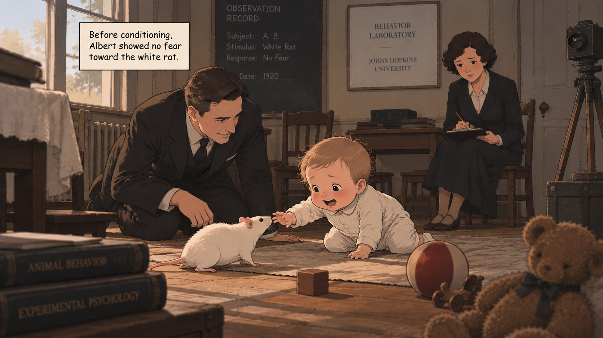

Informed Consent
Modern research places strong emphasis on informed consent and participant protection.
When fear is learned, not born.
This interactive exhibit explores John B. Watson and Rosalie Rayner's Little Albert experiment, one of the most well-known demonstrations of classical conditioning in psychology. It begins with a neutral stimulus, something that initially produces little or no particular response. Through repeated experiences and associations, a neutral stimulus can acquire a new meaning and eventually produce a learned response.

Before conditioning, Albert showed no fear toward the white rat.
The white rat initially produced no fear response in Albert.
A neutral stimulus became associated with something frightening. Eventually, the stimulus itself could trigger fear.
The Little Albert experiment became an influential demonstration that emotional responses could be conditioned through learning and association. It helped make classical conditioning an important part of the study of human behavior, while also becoming a lasting example of why psychological research must consider participant protection and ethical responsibility.
Modern research places strong emphasis on informed consent and participant protection.
Researchers today are expected to minimize unnecessary psychological distress or harm.
Participants, especially children, require heightened ethical safeguards.
Classical conditioning isn't just a theory. It can happen in everyday life.
CLICK A STORY TO EXPLORE CONTINUE TO REFLECTION →
Little Albert's story illustrates how experiences can create powerful associations. It also reminds us that understanding human behavior must go hand in hand with protecting the people involved.
What associations have shaped the way you respond to the world?